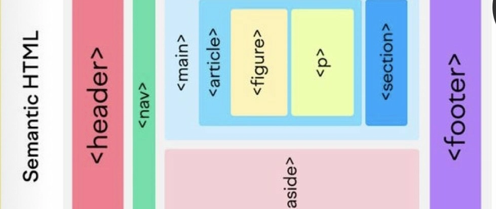

Author Biography

Sir Tim Berners-Lee is a British computer scientist credited with inventing the World Wide Web (WWW) in 1989 in 1989 while working at CERN, developing fundamental technologies like HTML, HTTP, and URLs, making information sharing globally accessible, and now advocating for a more open, user-controlled web through organizations like the World Wide Web Consortium (W3C) and the Solid Project.
Follow me: | | |Most Recent Blog Post
- Mastering html table for data
- Why Accessibility Matters
- A Guide to Semantic Tag
- Understanding Browser Rendring
Sir Tim Berners-Lee did not write a book or guide titled "mastering html table for data". His primary contribution was inventing the World Wide Web and the initial version of HTML as a simple markup language to structure and link scientific documents, with the design principle of separating content from presentatio

Sir Tim Berners-Lee, the inventor of the World Wide Web, has emphasized the importance of accessibility, stating that the web's power lies in its universality and that access regardless of disability is essential.
There is no single document titled "A Guide to Semantic Tag" written by Sir Tim Berners-Lee. Instead, Berners-Lee, the inventor of the World Wide Web, is the primary visionary behind the Semantic Web, a broader concept that involves making all web data machine-readable, which in turn gives rise to the use of "semantic tags" and structured data.
Tim Berners-Lee did not create a specific public document titled "Understanding Browser Rendering"; his foundational work on the web's core technologies like HTML and HTTP established how early web content was processed and displayed . His contributions were essential to the development of the first web browser/editor.

Blog Post Categories
- Development
- Desine
- Ui &Ux
- Operating System